Window e promp

Primeiro código javascript usando o JS no html e na folha se JS
Usando o metodo prompt e window sem variáveis.
Para criar um arquivo javascript é necessário colocar a extenção .js no final do texto de descrição do arquivo.
O que é algoritimo
O algorítimo é um sequencia ordenada, um passo a passo para atingir um objetivo definido.
Trocar uma lampada pode ser um algorítimo. Se a lampada não funciona pergunte: a lamáda está enrroscada? Se não enrrosque ela, se não pergunte o bulbo queimou? Se sim troque o bulbo, se não troque a lampada.
Fazer um miojo pode ser um algorítimo, um manual de instrução pode ser um algorítimo.
Logica de programação
Através do raciocínio lógico que é um desafio mental de cada um, usar estruturas definidas da linguagem com for, do while, while para criar a lógica da programação. Ela nos dá ferramentas para resolver problemas e se organizar com raciocínio lógico mais apurado.
Console.log()
Material de apoio console Uma função do javascript para jogar no caso do navegador os dados para area de debug, o console é usado com uma função com uma variável do tipo string dentro de aspas duplasconsole.log("olá mundo")
Comentando código
No JavaScript é possível comentar no código linha a linha com //
Para comentar o códico em brlocos faça */ /* para fechar
Variáveis
Variáveis servem para armazenar valores e usar essas variáveis em todo código. A partir do ecmascript 6 existem 3 formas.
- Var: pode ser reatribuido,não suporta escopo de bloco
- Let: pode ter seu valor reatribuido, respeita qualquer escopo, de bloco, local ou de função
- const: o seu valor não pode ser alterado por reatribuição
As vairáveis não podem ter nome de palavras reservadas, começar com números e sem espaço. è possível usar caracteres especiais para saber a lista de exisgencias de uma variável consulte o notion
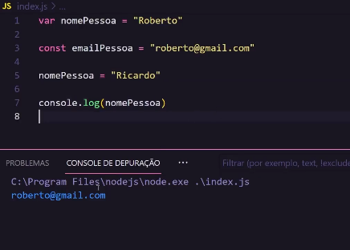Variáveis precisam ter um bom nome, algo que especifique o que ela representa, não fique colocando nomes de variaveis como n1, n2
Depuração
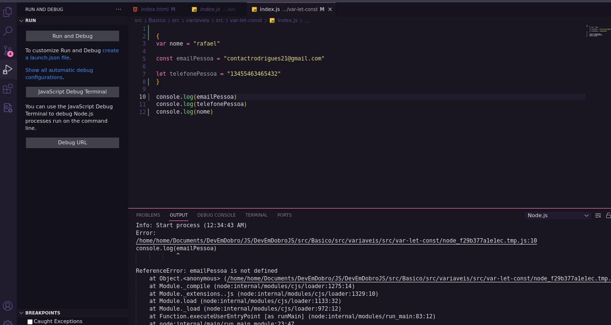 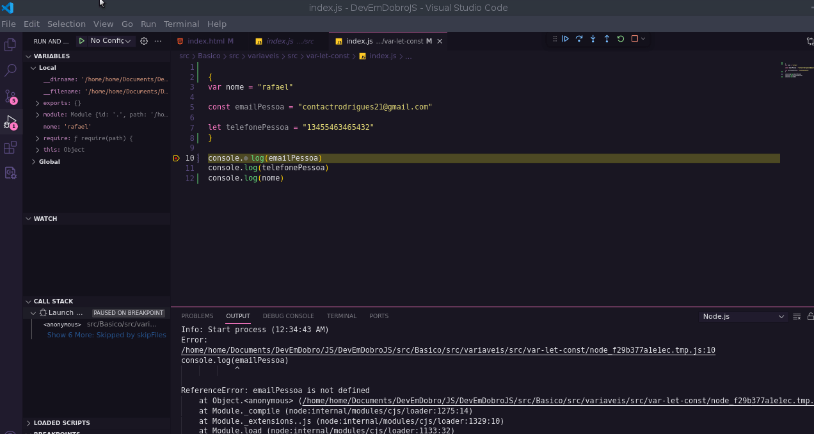Para que a depuração aconteça por padrão é necessário ter o node instalado na máquina na versão de pelo menos 18.4
Para que a depuração aconteça é necessário colocar o brackpoint no código, o código pode ter vários.
Seguindo o gif irá conseguir ver como depurar o código. O F5 também joga para o próximo brackpoint, e o F10 para a próxima linha. Essa depuração não funciona para capturar elementos DOM ou para funções como window().
Tipos primitivos
Material de apoioO js tem 6 tipos de tipos primitivos, são eles:
- Number
Pode ser inteiro, real ou, positivo e negativo
- String
Representa um dado do tipo texto e pode ser representado tanto com aspas simples como aspas duplas. Numeros também são identificado como string se dentro de aspas.
- Bolean
Verdadeiro ou falso, bastante usado para verificar uma condição
- Undefined
O javascript não consegue definir o tipo da variável.O javascript que vai dizer quando a variável é indefinida
- Null
Geralmente aponta para um endereço de memoria inválido ou inexistente.
- Simbol
Operadores Lógicos
Exercício igualdade Documentação mozila- Um igual se lê recebe, é usado para atribuir uma variável.
- Dois sinais de iguais é a comparação de valoes, igualdade.
- Três sinais de iguais é igualdade entre valor e tipo. Tem que ser idêntico
- ! a exclamação vai negar, então se você tentar comparar a igualdade ele vai negar e dizer que não é igual, é diferente.
A saida de operadores lógicos é boleana.
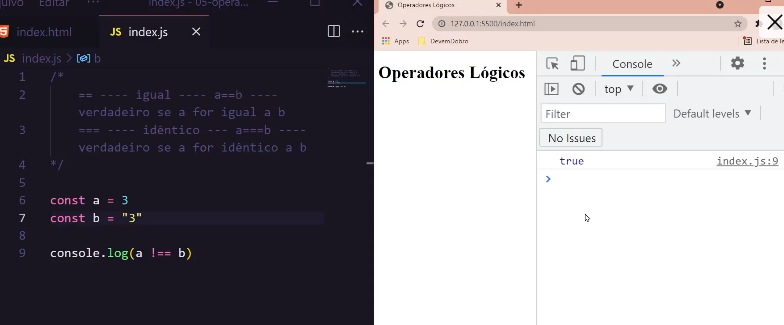- && Sinal usado para junção. lido como "and ou e", em uma operação uma parte deve ser verdadeira e a outra também por exemplo. 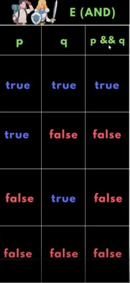
Se um for verdadeiro e o outro falso é falso. veja o exercício.
Exercício com sinal &&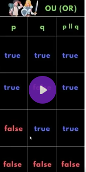
A tabela da verdade do ou mostra as condições de verdadeiro e falso para o resultado usando ou
Exercícios com disjunçãoExercício Negação
Essa expressão vai negar o resultado da expressão invertando. se for true é false se for false é true. è preciso colocar entre parenteses para testar a condição e depois o resultado.
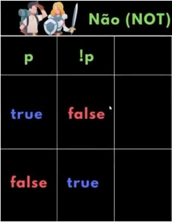Operadores matemáticos
Essa lógica funciona em qualquer linguagem de programação.
Exercício operadores matematicos- Soma +. O sinal de soma em números irá somar, caso seja em string irá concatenar.
- Subtração -
- Divisão /
- Multiplicação *
- Resto da divisão %
Estes são os operadores mais importantes, o resto da divisão é pouco usado.
Laços de repetição
Material de apoio- For: Facil de iterar em um objeto por um número definído. Inicializador: condição: incremento.
Se o resultado dessa expreção for true, o laço será executado até chegar na condição que for false.
Exercício For

- while. Enquanto a condição for verdadeira faça. O teste lógico fica no início, assim é preciso ser verdadeiro para executar o bloco. Exercício while 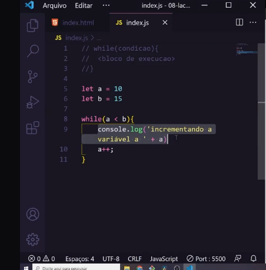
- do while, executa o bloco e depois faz o incremento e o teste lógico em seguida. Exercício dowhile 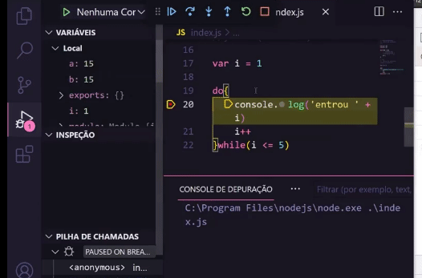
Condicionais
Material de apoio- if. Significa se . Ela verifica se a condição é true ou false para entrar em um fluxo. Esse escopo que é criado para condicional só é acessado se o teste lógico for positivo. Também é possível criar mais de um teste lógico para um resultado com else if(). E com o else sozinho não tem condição, basta que o teste lógico tenha dado false.
- Operador ternário condição ? faça : se não faça isso. Ele executa o teste lógico e se positivo faz a primeira condição, se não a segunda. Essa é uma forma menos verbosa de fazer um if else. Exercício operador ternário.
- Switch
nesse caso o ele se comporta parecido com uma função. é preciso informar um parâmetro, e o case irá vir o caso em que será testado.
É imprescindível u uso do brack no final de cada case. Ele também tem o default, que seria equivalente ao else. Exercício switch case - Também é possível no swich case colocar uma condição para mais de um caso. Basta escrever a condição acima da que tem o bloco a ser executado e colocar um break para esses casos. Swith case em blocos
funções
Em funções que tem nome, coloque exatamente o que a função está fazendo. Crie funções que tem só uma responsabilidade. Pois fica difícil entender testar funções com multiplas funcionalidades e condiçóes.
A função é declaraca como function, e essa function é seguida pelo nome e dois parênteses que podem receber parâmetros na função. Então se abre e fecha chaves determinando o escopo da função que pode ou não retornar um resultado.
Para que a função seja executada ela precisa ser chamada em algum lugar do código seja no html ou no js. Basta escrever o nome da função e abrir e fechar parênteses. Caso tenha parâmetros esses são passados dentro dos parênteses.
Quando a função retorna um resultado esse resultado pode ser armazenado dentro de uma variável e ser usado em outra operação.
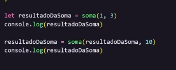 Exercício variável recebe resultado de funçãoA função também pode ser setada com um parâmetro de valor padrão, mas para isso em seus parâmetros deve ser definido essas condições.
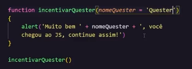 Exercício Parametro padrão